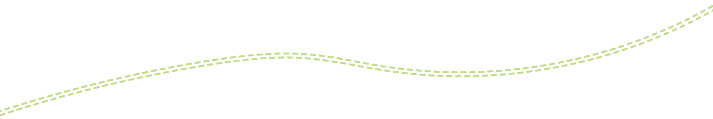
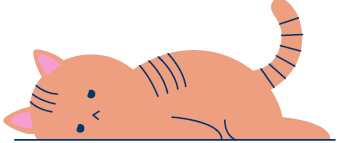
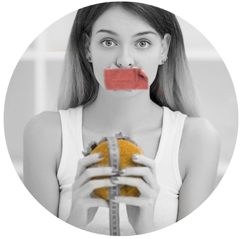
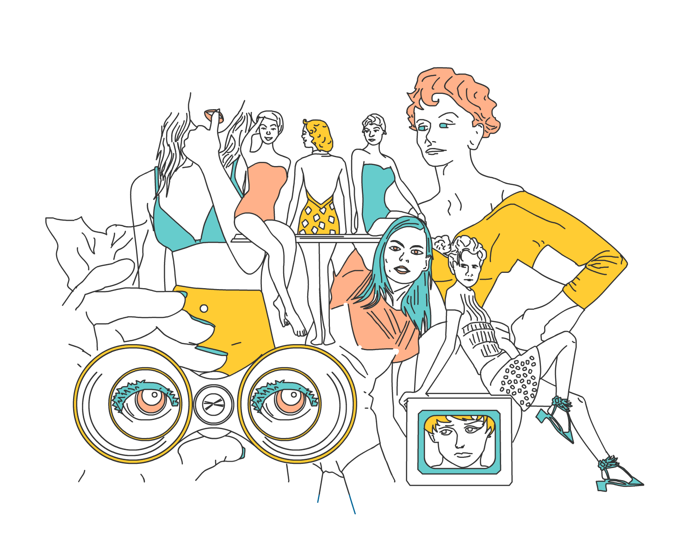
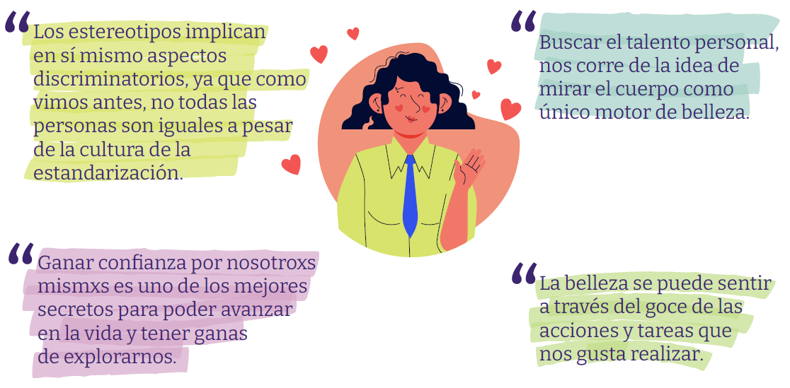
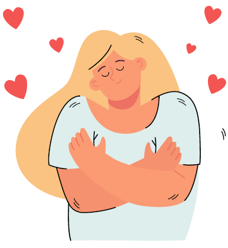

Alimentación, imágenes y estereotipos
Alimentación saludable
La nutrición en la adolescencia es un tema súper importante que muchas veces está mas vinculado a cómo nos queremos ver, que a cómo nos sentimos a partir del funcionamiento que permite la buena nutrición en el organismo.
Una alimentación sana en edades tempranas como la adolescencia, va a favorecer una vida mas saludable en etapas futuras y la prevención de enfermedades asociadas a la mala alimentación o mas bien al consumo excesivo de alimentos fast food, o con mucho sodio o azúcar.
En esta época pueden adquirirse nuevos hábitos de consumo de alimentos, debido a varios factores: influencias psicológicas y sociales, de los amig@s y compañer@s, el hábito de comer fuera de casa, el rechazo a las normas tradicionales familiares, la búsqueda de autonomía, etc.
Sin embargo rebelarse a partir de la alimentación, es una decisión poco favorable para encarar actividades tanto físicas como del pensamiento.
¿Cuáles serían buenos hábitos?
Los buenos hábitos incluyen la actividad física y estilo de vida saludable, y evitar otros hábitos perjudiciales como el tabaco y consumo de alcohol.
Con frecuencia comer fuera de casa, hace suprimir o restringir comidas, que son reemplazadas muchas veces por pequeñas ingestas entre las comidas principales.
Éstas disminuyen el apetito, suelen tener bajo poder nutritivo y alto valor calórico, favoreciendo además problemas como la obesidad, caries dental y malos hábitos dietéticos.
¡Abrir menos paquetes y comer mas frutas y comida casera es una buena recomendación!
Los malos hábitos alimentarios serían
- Consumo excesivo de bebidas azucaradas y gaseosas o jugos en cartón.
- Mayor consumo de grasa total.
- Grasa saturada genera aumento del colesterol.
- Alimentos con muchos azúcares como galletitas, tortas, facturas, helado
- Alimentos con sal agregada

Virtualidad y sedentarismo
En casa, el hábito de estar muchas horas, incluso comer delante de las pantallas sumando la inactividad física, promueven el sedentarismo y facilitan asimismo el desorden de las ingestas. Esto, lleva a saltear comidas claves, como el desayuno, que hacen a una baja en la energía cotidiana, influyendo en el humor y a veces hasta generar sensación de cansancio o bajón.
Vivir a dieta ¿Para qué?
Las dietas no convencionales, vegetarianas, macrobióticas, de alimentos naturales, etc., comienzan con frecuencia a practicarse en la adolescencia.
Es muy importante hacer la consulta de orientación con un/a nutricionista y un médico/a clínico/a, primero para dar cuenta de la necesidad de una dieta balanceada.
El termino dieta no significa no comer, ni comer siempre lo mismo. Los alimentos deben ser variados para una buena dieta diaria, y deben incluir todos los grupos: lácteos, carnes blancas y rojas, como pollo pescado y carne vacuna, hidratos de carbono que no sollo vienen de las harinas como se cree, también las frutas contienen un alto contenido de hidrato que es muy saludable para el cuerpo, además integrar ingestas de fibra a través de los cereales y otros consumos es muy relevante.

Recomendaciones en la alimentacion
La recomendación de una alimentación sana se basa en una distribución calórica apropiada, con un equilibrio entre la ingesta y el ejercicio físico, y una variedad de alimentos en los cuáles haya consumo de leche y productos lácteos, hidratos de carbono complejos, frutas, verduras, legumbres, aceite de oliva y pescados, limitando el consumo de carnes, grasas saturadas, snack y gaseosas. Todo ello aporta la cantidad de macronutrientes y micronutrientes necesarios para un desarrollo adecuado.
La familia puede ejercer una influencia favorable en la dieta de lo/as adolescentes, con el desarrollo de buenos hábitos alimentarios y patrones de conducta.
Puede aparecer una preocupación excesiva por la imagen corporal, basándose en un determinado ideal de belleza (estereotipado, único, hegemónico) iniciándose así los regímenes para adelgazar que conducen a una ingesta insuficiente de muchos nutrientes.
Además, estas personas incrementan la actividad física o incluso inician conductas purgativas para el mantenimiento del peso. Existe el riesgo de que esta práctica conduzca a un verdadero trastorno de la conducta alimentaria.
Pensar en cuerpos y corporalidades, tiene siempre un componente cultural muy predominante, además del biológico que determina la fisonomía de cada persona.
El componente cultural, es de vital trascendencia porque refiere a los modos de expresión que una sociedad tiene para comunicarse y que, además, se manifiestan simbólicamente en muchos aspectos como: el lenguaje, la musical, de indumentaria.
y también en los modelos o tipos de belleza y cuerpos “válidos”.
A partir de la globalización, el fenómeno de la transculturalización, implicó la penetración de modos de vida que pertenecen a otras culturas, como ser: Lenguajes, hábitos alimentarios, modos de vestirse (out fit), tipos de cuerpos, etc. en otro tipo de sociedades que distan de parecerse originalmente a estos estilos importados. Sin embargo, tanto se repite el mensaje que se va naturalizando.
Los medios de comunicación, favorecen la multiplicación de un mensaje dominante que termina homogeneizando la cultura, estandarizando parámetros de conducta, belleza, etc. invocando una hegemonía en detrimento de las particularidades. Por ejemplo, de los países Latinoamericanos que tienen otras tradiciones, otros lenguajes simbólicos, fisonomías, y otros cuerpos. Al igual que Asia o África que también tienen sus propias tradiciones y rasgos culturales.
Imagen virtualidad vs imagen real
En la actualidad, donde los medios de comunicación se han diversificado: Aparece la comunicación 2.0 (redes sociales, medios digitales) donde la llegada y cercanía se ve favorecida tanto como la fluidez de microculturas que propician sus propios modelos y estándares.
El contacto directo entre los consumidores, de las redes sociales, a su vez, facilita la participación de las personas comunes en la generación de tendencias. Lo cual a veces es positivo y muchas veces no.
El mundo moderno, mediante estas nuevas herramientas construye determinados iconos que inspiran y promueven acciones positivas, como pueden ser las de un/a influencer que realiza deportes o acciones solidarias, o influencers que tienen un talento que anima a las personas a experimentar el propio.
Dentro de estos nuevos modelos de conducta que influyen en la sociedad, que se legitiman a raíz de su repetición masiva, o bien por la cantidad de seguidores que tiene una persona, promueven determinados parámetros estéticos y de belleza que se presentan como arquetipos ideales a alcanzar.
El uso de filtros y demás truquitos con los que cuentan las redes sociales, da cuenta que la imagen que se reproduce en las Redes sociales no es la verdadera. Sin embargo, en el mundo de lo estético y la felicidad aparente, pareciera incitar a que todxs quieran verse como celebridades.
¿Será un fenómeno pasajero? ¿Por qué la necesidad de subir lo que vamos haciendo paso a paso?
Si bien los grandes medios de comunicación, denominados cuarto poder, aún tienen un lugar preponderante en la construcción de un modelo cultural y discursivo, basado en la imagen, ese mensaje se está viendo modificado por la fluidez de las comunicaciones, que facilitan la difusión de otros modelos de sociedad posible.
La diversificación de voces nuevas, dan inicio a una etapa muy interesante donde el Desarrollo Humano, comienza a valorarse, en detrimento del consumismo como principal motor de la vida.
Valores como la sustentabilidad, el veganismo, la sostenibilidad, el uso del tiempo, comienzan a aparecer como factores preponderantes en la vida de algunas personas y esto nos interpela acerca de cómo queremos vivir.
Imágenes y estereotipos
La valoración en los 90 representada por el auge de las modelos de pasarela de origen europea, acompañado por las muñecas que imitaban esos cuerpos hiperdelgados, trajo muchos trastornos en la alimentación de muchas niñxs y adolescentes que confiaron en que ese era el cuerpo ideal.
Sin embargo, una vez se hizo un estudio en el cual se puso el cuerpo de la muñeca en perspectiva y notaron que en la vida real una persona así sería alguien con muy mal estado de salud, por falta de masa muscular, etc. Así, empezaron a alertarse los productores y difusores de ese mensaje, que estaba causando un prejuicio social.
El cuerpo humano, posee características personales irrepetibles y es el envase que vas a llevar toda la vida y por eso hay que cuidarlo con todas las herramientas que tenemos al alcance: una buena alimentación, un trato respetable y amoroso con las personas, realización de actividades placenteras que ofrezcan alegría y bienestar como bailar, cantar, saltar, correr o la actividad en movimiento que más te guste
La búsqueda del talento en sí, es una buena manera de encontrar nuestra particularidad. Esto es, aquello que te gusta hacer.
Muchas veces no sabemos qué es lo que nos gusta hacer y por eso estamos muy pendientes de la mirada del otro/a que no resulta del todo amigable.
Redes sociales, frustración y amor propio
Las redes sociales, muchas veces no ayudan a favorecer el amor propio, porque muchas veces ponemos nuestra autoestima como si estuviera sujeta a la opinión de los demás. Hay etapas en la vida en que nos afecta más o menos lo que los demás opinan. Pero con el tiempo, nos damos cuenta que lo que traía muchxs detractorxs era justamente el valor a sobresalir o el talento.
En general, se critica lo diferente, dado que venimos y nacimos en una sociedad de consumo, donde lo estandarizado y hecho a repetición, parece lo que todxs debiéramos tener o querer. Sin embargo es hora de rebelarse y seguir el instinto personal y reconocer cada particularidad y profundizarla.
Tener más o menos likes, puede indicar un poco de popularidad pero también se puede alcanzar la popularidad a través de un talento y no únicamente de mostrar lo que hacemos en la vida cotidiana.
Algunas personas, a través del anonimato de una computadora son capaces de ser muy crueles y hay que tener muy en claro que esa opinión de los demás, no constituye otra cosa que su opinión y a nosotrxs no nos modifica o no debería modificarnos en nada.
Si tenes dudas o te sentís bajoneada/o consulta con el Servicio de Adolescencia del Hospital Houssay
Servicios
Hospital Municipal Dr Bernardo Houssay Hipólito Yrigoyen 1757 Florida
Servicio de Adolescencia 4796-7200 (int 7309) adolescenciaservicio@gmail.com